Chapter 11 – CCNA 2
01. 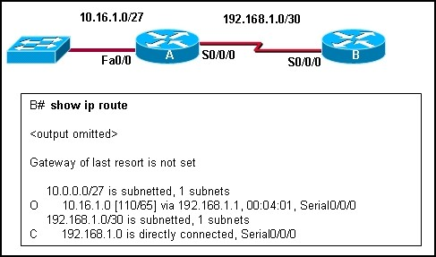Refer to the exhibit. Router A is correctly configured for OSPF. Which OSPF configuration statement or set of statements was entered for router B to generate the exhibited routing table?
- B(config-router)# network 192.168.1.0 0.0.0.3 area 0;
- B(config-router)# network 10.16.1.0 0.0.0.224 area 0;
- B(config-router)# network 10.16.1.0 255.255.255.224 area 0;
- B(config-router)# network 192.168.1.0 255.255.255.255 area 0;
- B(config-router)# network 10.0.0.0 255.255.255.255 area 0;
02. 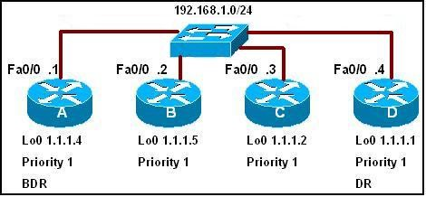 Refer to the exhibit. All routers have been configured with the interface priorities that are shown. All routers were restarted simultaneously. The results of the DR/BDR election are shown. What can be concluded about this network?
- Router C cannot win a DR election under any circumstances.
- If the link for interface 192.168.1.4 goes down, router B will become the new DR.
- The highest router ID was most likely determined via an OSPF router-id statement or statements.
- If a new router is added with a higher router ID than router D, it will become the DR.
03.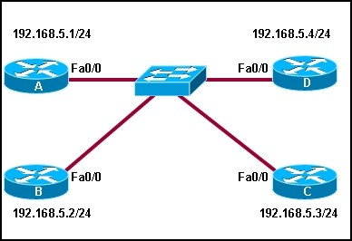 Refer to the exhibit. Routers A, B, C, and D are all running OSPF with default router IDs and OSPF interface priorities. Loopback interfaces are not configured and all interfaces are operational. Router D is the DR and router C is the BDR. What happens immediately after the following commands are entered on router A?
A(config)# interface fa0/0
A(config-if)# ip ospf priority 255
- A will become the DR. D will become the BDR.
- A will become the DR. C will remain the BDR.
- D will remain the DR. A will become the BDR.
- D will remain the DR. C will remain the BDR.
04.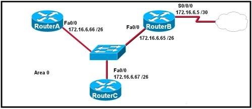 Refer to the exhibit. Which command sequence on RouterB will redistribute a gateway of last resort to the other routers in OSPF area 0?
- RouterB(config)# router ospf 10 ; RouterB(config-router)# gateway-of-last-resort 172.16.6.6;
- RouterB(config)# ip route 0.0.0.0 0.0.0.0 serial 0/0/0 ;
- RouterB(config)# ip route 0.0.0.0 0.0.0.0 172.16.6.6 ;RouterB(config)# router ospf 10 ; RouterB(config-router)# default-information originate;
- RouterB(config)# router ospf 10 ; RouterB(config-router)# default-network 172.16.6.6 0.0.0.3 area 0;
- RouterB(config)# ip route 0.0.0.0 0.0.0.0 172.16.6.6 ;
- RouterB(config)# ip default-route 0.0.0.0 0.0.0.0 172.16.6.6 ; RouterB(config)# router ospf 10; RouterB(config-router)# redistribute ip default-route.
05.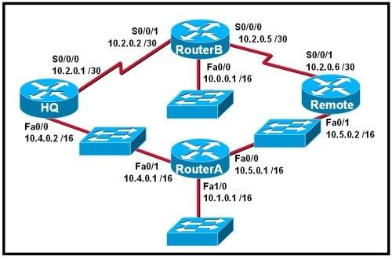 Refer to the exhibit. The routers in the exhibit are using default OSPF configuration settings to advertise all attached networks. If all of the routers start at the same time, what will be the result of the DR and BDR elections for this single area OSPF network? (Choose three.)
- HQ will be DR for 10.4.0.0/16.
- Router A will be DR for 10.4.0.0/16.
- HQ will be BDR for 10.4.0.0/16.
- Router A will be DR for 10.5.0.0/16.
- Remote will be DR for 10.5.0.0/16.
- Remote will be BDR for 10.5.0.0/16.
06.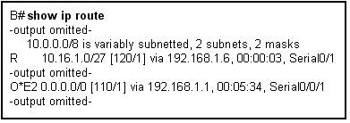 Refer to the exhibit. What does the “O*E2″ from the “O*E2 0.0.0.0/0 [110/1] via 192.168.1.1, 00:05:34, Serial0/0″ line represent?
- an internal type 2 OSPF route.
- an external OSPF route at least two hops away.
- an external OSPF route from two different sources.
- an external OSPF route that will not increment in cost.
- a default route.
- The route was distributed into OSPF from a type 2 router.
07. 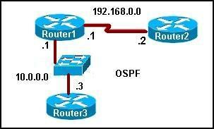 Refer to the exhibit. When OSPF is operational in the exhibited network, what neighbor relationship is developed between Router1 and Router2?
- A FULL adjacency is formed.
- A 2WAY adjacency is formed.
- Router2 will become the DR and Router1 will become the BDR.
- Both routers will become DROTHERS.
08.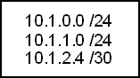 Refer to the exhibit. Which network command or set of commands will cause OSPF to be enabled for any R1 interface connected to the exhibited subnets?
- R1(config-router)# network 10.0.0.0 0.0.0.0 area 0;
- R1(config-router)# network 10.1.0.0 0.0.0.255 area 0 R1(config-router)# network 10.1.1.0 0.0.0.255 area 0; R1(config-router)# network 10.1.2.4 0.0.0.3 area 0;
- R1(config-router)# network 10.1.0.0 0.0.0.255 area 0R1(config-router)# network 10.2.0.0 0.0.0.255 area 0;
- R1(config-router)# network 10.0.0.0 0.0.255.255 area 0;
09. A fully converged five router OSPF network has been running successfully for several weeks. All configurations have been saved and no static routes are used. If one router looses power and reboots, what information will be in its routing table after the configuration file is loaded but before OSPF has converged?
- All routes for the entire network will be present.
- Directly connected networks that are operational will be in the routing table.
- Because the SPF algorithm has not completed all calculations, no routes will be in the table.
- A summary route for all previously learned routes will automatically appear in the routing table until all LSPs have been received by the router.
10. 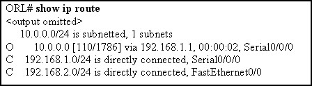 Refer to the exhibit. What is the cost of the route to the 10.0.0.0 network?
- 2;
- 110;
- 1786;
- 1.544;
11. 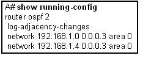 Refer to the exhibit. What does the “2″ stand for in the router ospf 2 statement?
- The number 2 is the autonomous system number.
- The number 2 indicates the number of networks advertised by OSPF.
- The number 2 identifies this particular instance of OSPF on this router.
- The number 2 indicates the priority of the OSPF process on this router.
12. 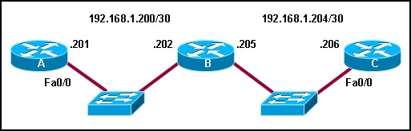 Refer to the exhibit. Assuming that the routers have default interface OSPF priorities and no configured loopback interfaces, what two roles will router B play on each network segment? (Choose two.)
- DR for network 192.168.1.200;
- BDR for network 192.168.1.200;
- DROTHER on 192.168.1.200;
- DR for network 192.168.1.204;
- BDR for network 192.168.1.204;
- DROTHER on network 192.168.1.204;
13. What is the default administrative distance for OSPF?
- 90;
- 100;
- 110;
- 115;
- 120;
14. What three parameters must be indentical between OSPF routers in order to form an adjacency? (Choose three.)
- area id;
- K-values;
- metric value;
- hello interval;
- network type;
- interface type;
15. 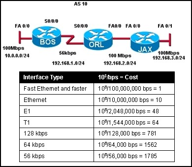 Refer to the exhibit. All routers are running OSPF. What cost would JAX put in its routing table for the 10.0.0.0/24 network?
- 2;
- 156;
- 1564;
- 1785;
- 1787;
16.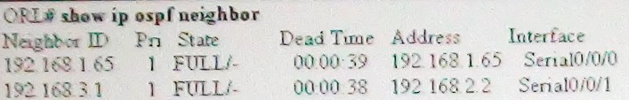 Refer to the exhibit. What must be received between neighbors to prevent the dead time that is shown in the exhibit from reaching zero?
- any traffic through the router interfaces;
- routing database updates;
- hello packets;
- BPDU packets;
17.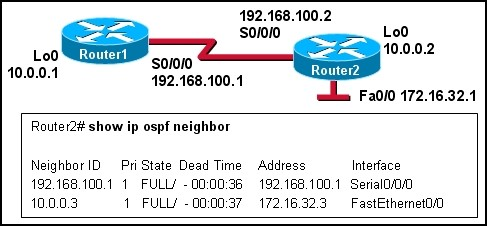 Refer to the exhibit. The network administrator wants to set the router ID of Router1 to 192.168.100.1. What steps can the administrator take to accomplish this?
- shut down the loop back interface;
- use the OSPF router-id 192.168.100.1 command;
- use the clear ip ospf process command;
- nothing, the router-id of Router1 is already 192.168.100.1
18.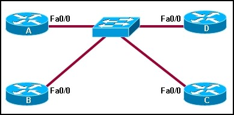 Refer to the exhibit. How many OSPF adjacencies must be formed to build the complete topology if a DR or BDR were not elected in this OSPF network?
- 4;
- 5;
- 6;
- 7;
- 10;
19.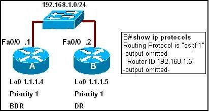 Refer to the exhibit. What configuration statements would give the results that are shown in the output of the show ip protocols command?
- B(config)# int fa0/0 ; B(config-if)# router-id 192.168.1.5 ;
- B(config)# int lo0 ; B(config-if)# ip address 192.168.1.5 ;
- B(config)# router ospf 1 ; B(config-router)# router-id 192.168.1.5 ;
- B (config)# router ospf 1 ; B(config-router)# ip address 192.168.1.5 .
20. Which two statements describe the use of OSPF DR/BDR elections? (Choose two.)
- Elections are always optional.
- Elections are required in all WAN networks.
- Elections are required in point-to-point networks.
- Elections are required in broadcast multiaccess networks.
- Elections are sometimes required in NBMA networks.
21. What does OSPF use to reduce the number of exchanges of routing information in networks where large numbers of neighbors are present? (Choose two.)
- root router;
- backup root router;
- domain router backup domain router;
- designated router;
- backup designated router;
22.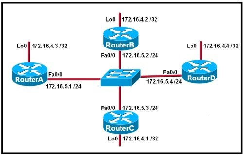 Refer to the exhibit. RouterA, RouterB, and RouterC in the diagram are running OSPF on their Ethernet interfaces. Router D was just added to the network. Routers are configured with the loopback interfaces (Lo 0) that are shown in the exhibit. What happens to the OSPF DR/BDR after RouterD is added to the network?
- RouterB takes over as DR and RouterD becomes the BDR.
- RouterD becomes the BDR and RouterA remains the DR.
- RouterD becomes the DR and RouterA becomes the BDR.
- RouterC acts as the DR until the election process is complete.
- RouterD becomes the DR and RouterB remains the BDR.
- There is no change in the DR or BDR until either current DR or BDR goes down.
23.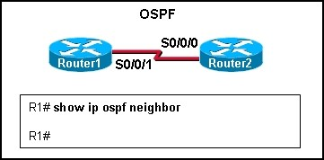 Refer to the exhibit. Router1 and Router2 are running OSPF. The show ip ospf neighbor command reveals no neighbors. What is a possible cause?
- OSPF autonomous system IDs do not match.
- OSPF process IDs do not match.
- OSPF network types are identical.
- OSPF hello or dead timers do not match.
24. What does OSPF use to calculate the cost to a destination network?
- bandwidth;
- bandwidth and hop count;
- bandwidth and reliability;
- bandwidth, load, and reliability;
25. What range of networks will be advertised in the OSPF updates by the command Router1(config-router)# network 192.168.0.0 0.0.15.255 area 100?
- 192.168.0.0/24 through 192.168.0.15/24;
- 192.168.0.0/24 through 192.168.15.0/24;
- 192.168.15.0/24 through 192.168.31.0/24;
- 192.168.15.0/24 through 192.168.255.0/24;
- 192.168.16.0/24 through 192.168.255.0/24;
26. Router R1 is participating in the OSPF routing protocol as well as the EIGRP routing protocol. If R1 learns of network 192.168.10.0/24 from both the OSPF and internal EIGRP routing protocols, how will the route appear in the routing table of R1?
- Only the route learned from OSPF will appear in the routing table;
- Only the route learned from EIGRP will apperar in the routing table;
- Both routes will appear in the routing table until the network administrator selects which one to use.
27.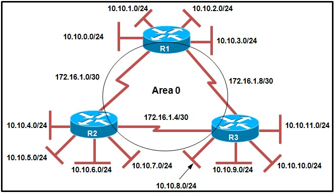 Refer to the exhibit. Routers R1, R2, and R3 have four local LANs attached. What is a correct set of network commands that will cause OSPF to be enabled for any R1 interface that is connected to its subnets?
- R1(config-router)# network 10.10.1.0 0.0.3.255 area 0
R1(config-router)# network 172.16.1.0 0.0.0.7 area 0;
- R1(config-router)# network 10.10.0.0 0.0.255.255 area 0
R1(config-router)# network 172.16.1.0 0.0.0.7 area 0;
- R1(config-router)# network 10.10.0.0 0.0.3.255 area 0
R1(config-router)# network 172.16.1.0 0.0.0.3 area 0
R1(config-router)# network 172.16.1.8 0.0.0.3 area 0;
- R1(config-router)# network 10.10.0.0 0.0.0.255 area 0
R1(config-router)# network 10.10.1.0 0.0.0.255 area 0
R1(config-router)# network 10.10.2.0 0.0.0.255 area 0
R1(config-router)# network 10.10.3.0 0.0.0.255 area 0
R1(config-router)# network 172.16.1.0 0.0.0.7 area 0.
28. 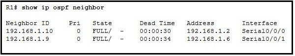Refer to the exhibit. What OSPF packets will trigger the reset of the Dead Time counter?
- hello packets;
- link-state update packets;
- link-state advertisement packets;
- OSPF routing database update packets.
29.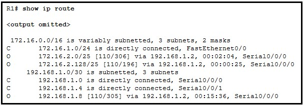 Refer to the exhibit. What is the cost of the route to the 172.16.2.128 network with the subnet mask of 255.255.255.128?

{kind=link}
{kind=link}
{kind=link}
{kind=link}
{kind=link}
{kind=link}
{kind=link}
{kind=link}
{kind=link}
{kind=link}
{kind=link}
{kind=link}
{kind=link}
{kind=link}
{kind=link}
{kind=link}
{kind=link}
{kind=link}
{kind=link}
{kind=link}
{kind=link}